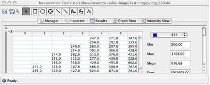

Selecting the Intensity View tab shows intensity data for the selected ROI shape as a table of values (Figure 3.10.6.3.2-1).
|  |
| Figure 3.10.6.3.2-1: Intensity view of pixel intensities |
The Intensity View window shows intensity values for a selected channel. The selected channel can be changed using the menu towards the top right of the window.
It also shows summary intensity data, to the right of the tabular display of intensities, including:
If the selected ROI shape is part of a multidimensional ROI, menus will be provided to allow you to move through each timepoint and/or z-section. In the example shown in Figure 3.10.6.3.2-1, the menu to the left of the figure allows you to change the z-section for which the intensity data should be shown.
Results shown in the Intensity View can be saved in a similar way to the Results view, by selecting the Save button at the bottom right of the Intensity View window.